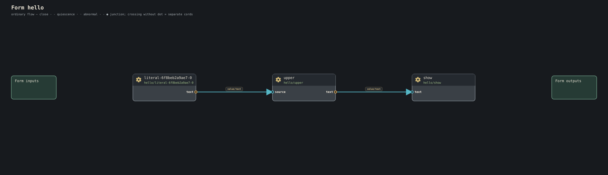

Journey 5 of 23
This page starts with source that exists in the current dev tree, then moves into newer canonical surfaces.
Hello: a finite pipeline
Current tree: forms/hello/main.conduit
form hello {
upper: text/upper
show: presentation/text
"Hello, world." >> upper >> show
}.

There is no explicit main function, process, display handle, or stdout. The form composes semantic work. The full stop says drain completes the form.
Clock: a standing live form
Current tree: forms/clock/main.conduit
form clock-demo {
clock: time/every(1s)
clock >> presentation/tick
}
No trailing full stop. The form remains alive between ticks.
Memory Lantern: input, editing, and Current
Current tree: forms/memory-lantern/main.conduit
form memory_lantern {
keyboard: input/keyboard
keymap: input/keymap
message: text/edit(maximum-bytes = 256)
show: presentation/text
keyboard.key >> keymap.key
keymap.text >> message.fragment
message.current >> show.text
}
The editor exposes current text. The form does not own a window, DOM node, terminal, or framebuffer.
Pocket Theremin: quantities and retained state
Current tree: forms/pocket-theremin/main.conduit
form pocket-theremin (
>> distance: Distance
audio: audio/pcm-frames@1...| >>
) {
map: math/map-distance-frequency(
source-minimum = 0cm,
source-maximum = 30cm,
target-minimum = 220Hz,
target-maximum = 880Hz
)
frequency: keep Frequency(440Hz) for this play
tone: audio/tone
distance >> map.distance
map.frequency >> frequency
frequency >> tone.frequency
tone.audio >> audio
}.
The units are semantic. The keep is current frequency state. Browser audio, hosted audio, or a future native realization can sit behind the same meaning.
The @1 catalog spelling in some current-tree examples is implementation/migration history, not a reason to invent new version-suffix syntax in authored canon.
Button across the room: meaning without transport
Current tree: forms/button-across-room/main.conduit
form button_across_room {
button: input/button
state: input/button-indicator-state
indicator: presentation/indicator-state
button >> state >> indicator
}
Nothing here says whether button and indicator are on the same host. If planning places them apart, a line may realize the crossing cord.
Desk Telegraph: reusable forms as gears
Current tree: forms/desk-telegraph/main.conduit
form text-record (
text: Text >> record: TypedRecord
) {
wrap: record/text-to-typed
text >> wrap.text
wrap.record >> record
}
form bounded-record-send (
maximum-items: Count = 4
maximum-frame-bytes: Count = 4096
frame: FramedTypedRecord >> queued: FramedTypedRecord
) {
queue: record/ordered-send-queue(maximum-items, maximum-frame-bytes)
frame >> queue >> queued
}
These are two complete declarations excerpted from the larger Desk Telegraph source. A form can itself define reusable semantic work and then be invoked like another kind.
Firefly Choir: omission is semantic composition
Current tree: forms/firefly-choir/main.conduit
form pulse-manifestation (
>> tick: value/tick@1...
) {
observe: time/pulse-observe(period-ms = 240)
light: presentation/pulse
tick >> observe.tick
observe.observation >> light.pulse
}
This is light-only because there is no tone gear and no tone cord. Sound is not a runtime flag that a host may quietly toggle.
Explicit enrichment
form pulse-light-tone-manifestation (
>> tick: value/tick@1...
) {
observe: time/pulse-observe(period-ms = 240)
light: presentation/pulse
tone: sound/pulse-tone
tick >> observe.tick
observe.observation >> light.pulse
observe.observation >> tone.pulse
}
The fan-out is visible.
Bounded navigation: portable intent down to motion requests
Current tree: forms/bounded-navigation/main.conduit
form bounded-navigation (
>> pose: NavigationPose
>> goal: NavigationGoal
>> traversability: NavigationTraversability4x4
>> time: NavigationTime
decision: NavigationRouteDecision >>
control: NavigationControl >>
request: RoboticsMotionRequest >>
) {
route: navigation/route-grid4
timing: navigation/time-parameterize
controller: navigation/local-control
pose >> route.pose
goal >> route.goal
traversability >> route.traversability
time >> route.time
route.decision >> decision
route.decision >> select(NavigationRouteDecision.route, unmatched=drop) >> timing.route
time >> timing.time
timing.trajectory >> controller.trajectory
pose >> controller.pose
time >> controller.time
controller.control >> control
controller.control >> select(NavigationControl.motion, unmatched=drop) >> request
}
The form ends at semantic body-motion intent. Robot authority and actuator lowering belong to the plan and host realization.
body Chat: application meaning, model choice still realization
Current tree: forms/body-chat/main.conduit
form body-chat (
>> interaction: FaceInteraction...|
face: Presentation...| >>
) {
ui: chat/state(title = "Body Chat", history-label = "Conversation", input-label = "Message", submit-label = "Send", status-label = "Body", maximum-history-items = 16, maximum-message-bytes = 256)
submit: chat/submit(action = "chat/send", maximum-message-bytes = 256)
available: boolean/literal(value = true)
availability: chat/current-connection
context: body/conversation-context
prompt: body/chat-prompt
model: llm/generate-flow(maximum-input-bytes = 4096, maximum-context-items = 1, maximum-output-bytes = 2560, maximum-work-units = 4096, maximum-history-items = 0)
text: llm/result-flow-to-text
available.value >> availability.value
availability.value >> ui.live
ui.presentation >> face
interaction >> submit.interaction
submit.message >> prompt.message
context.context >> prompt.context
prompt.human-message >> ui.message
prompt.request >> model.request
model.result >> text.result
text.text >> prompt.response
prompt.body-message >> ui.message
}
The semantic model operation is named. Provider protocol, URL, credentials, or Ollama identity do not belong in the form.
A mask is an ordinary form
Current tree: forms/native-graphical-mask/main.conduit
form native-graphical (
>> face: Presentation
interaction: FaceInteraction...| >>
show: Show >>
) {
spread: presentation/tee
surface: presentation/show-resource-source
render: presentation/resource-renderer
human: face/interaction
face >> spread.presentation
spread.presentation >> render.presentation
surface.show-resource >> render.show-resource
spread.presentation >> human.presentation
render.show >> human.show
render.show >> show
human.interaction >> interaction
}
mask is a role, not a special declaration or second UI language.
Checked refinements
Canonical:
form guarded (
>> name: Text <= 32B not in ["root", "admin"]
>> count: Count in 1..=100
>> code: Text <= 64B ~ /[A-Z]{2}[0-9]{2}/
) {
...
}
These relations become part of checked semantic type identity.
Glyphs remain inspectable gears
Canonical:
with text/upper as ^^
input ^^ output
a >< b >< c >> merged
note @ save-request >> snapshot
The checker can always expose text/upper, flow/merge, and current/sample behind the concise spelling.
A native semantic type
Merged current tree:
type LinguisticOffsetBasis =
unicode_scalar
| utf8_byte
The Rust binding is generated from this authored type.
One type family, exact concrete values
The current data types include this generic record and its bounded-text specialization:
type DataGenerationValue<T> = {
namespace: DataGenerationNamespace
value: T
}
type DataGenerationTextValue = DataGenerationValue<Text <= 4096B>
DataGenerationNamespace is defined in that same source. T ranges over
checked semantic types, and the application fixes one exact finite value shape
before play. Generated bindings consume that checked shape. The generic family
does not imply unbounded values or a runtime type-erasure layer.
Separate origin from certainty
These declarations are taken from the human-experience types:
type ExperienceOrigin =
observation
| human_reported
| remembered
| model_derived
| imagined
type ExperienceTemporalRole =
current
| recent
| stale
| historical
type ExperienceCertainty =
certain
| uncertain
Origin, age, and certainty are different facts. An uncertain observation and a certain recollection should not collapse into one flag. These finite variants make the distinctions available to checking and generated bindings; the vocabulary alone does not prove an observation happened or make every consumer report it honestly. That still needs the source's evidence and the consuming contract.
A pack
Canonical:
pack house/sensors (
version = 1.4.0
) {
ship temperature
need math/geometry = ^2.1
}
conduit.lock carries exact resolved truth. Imports grant no runtime authority.
body wardrobe
Canonical:
with masks/native-graphical as graphical
with masks/spoken as spoken
body roseau {
wear graphical, spoken
want graphical over spoken
}
The body permits either mask. The optional want line expresses its preference;
the comma list does not.
host construction
Canonical:
host tiny-screen (
target = conduitos/x86_64/pc
build = release
) {
surface: resource presentation/surface (
slots = 2
bytes = 2MiB
)
display: base machine/display
graphics: back presentation/graphics (
surface = surface
display = display
)
bounds = {
heap: 8MiB,
calls: 32,
signs: 256
}
}
This is construction source. A successful parse does not claim the machine booted or the display exists.
Bounded collection behavior
A reusable form can take exact checked behavior as a parameter. This is the
flow/each wrapper from the
activation tests:
form flow/each (
item: type
result: type
transform: kind (
>> value: item
mapped: result >>
)
>> values: item...|
mapped: result...| >>
) {
each: activate(maximum-items = 4) transform()
values >> each.value
each.mapped >> mapped
}
transform is checked at specialization time. activate bounds its work and
keeps each selected invocation inspectable. The wrapper's name is defined by
this source; it is not a promise that bare flow/each(...) resolves everywhere.
For selection, folding, scanning, and collection proof, continue with bounded activation in the reference. That reference gives the exact body fragments, required fores, and std/browser proof boundaries. #4378 is completed work, not a remaining syntax gap.
A record owns its law
type Interval = {
start: U32
end: U32
where .start <= .end
}
The law belongs to the type and is enforced when generated bindings construct or decode a value. See the real TextSpan declaration. This does not yet mean every consuming form can erase an arithmetic check from that fact; #4639 owns that work.